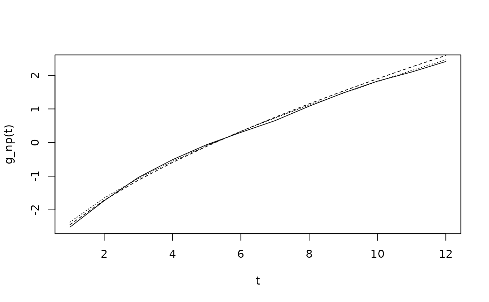

Compute a CDF-based transformation using the observed count data.
The CDF can be estimated nonparametrically or parametrically based on the
Poisson or Negative Binomial distributions. In the parametric case,
the parameters are determined based on the moments of y.
Note that this is a fixed quantity and does not come with uncertainty quantification.
Arguments
- y
n x 1vector of observed counts- distribution
the distribution used for the CDF; must be one of
"np" (empirical CDF)
"pois" (moment-matched marginal Poisson CDF)
"neg-bin" (moment-matched marginal Negative Binomial CDF)
Examples
# Sample some data:
y = rpois(n = 500, lambda = 5)
# Empirical CDF version:
g_np = g_cdf(y, distribution = 'np')
# Poisson version:
g_pois = g_cdf(y, distribution = 'pois')
# Negative binomial version:
g_negbin = g_cdf(y, distribution = 'neg-bin')
#> Warning: 'neg-bin' not recommended for underdispersed data
# Plot together:
t = 1:max(y) # grid
plot(t, g_np(t), type='l')
lines(t, g_pois(t), lty = 2)
lines(t, g_negbin(t), lty = 3)
